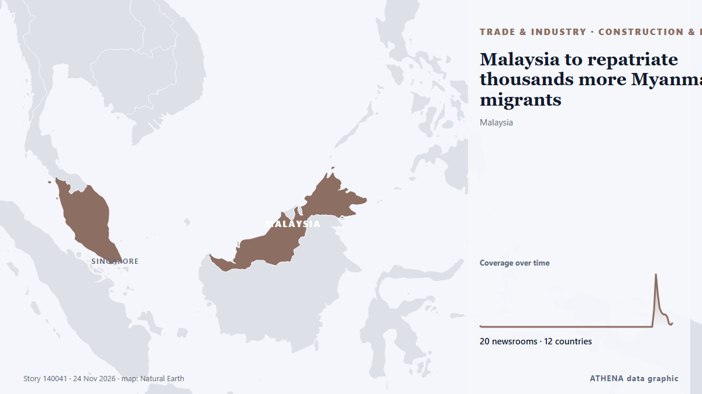

Malaysia to repatriate thousands more Myanmar migrants

KUALA LUMPUR: Malaysia's Prime Minister Anwar Ibrahim said on Tuesday the country will send more than 6,500 migrants back to Myanmar in a new round of repatriations. de Oman Observer
Ce qui a changé 3 nouveaux reportages de 3 médias ces 24 dernières heures.
Voir les sources ›Preuves: Limitées
Relayé de façon indépendante par 20 médias dans 12 pays depuis le 30 avr. ; premier à l'annoncer : GDACS disaster alerts (UN/EU) ; la couverture faiblit. ATHENA juge le risque modéré (2.4/10), surtout en raison de la gravité des dommages décrits et de sa portée géographique et sectorielle. La confiance est de 64 % (modérée) : 20 médias indépendants le confirment, avec une fiabilité moyenne des sources de 73 %. Médias par pays : Malaisie (28), Singapour (2), Japon (2). Couverture : du 30 avr. au 24 nov., 4990 heures.
Ce qui a changé : 3 nouveaux articles de 3 rédactions dans les 24 heures jusqu'au 24 nov..
Premier titre : Talent key factor in attracting investments under global minimum tax: Tengku Zafrul
AutomatiséSélectionné, regroupé et noté selon la méthode publiée d'ATHENA à partir de 11 médias indépendants. Le titre est celui du média ; les phrases d'ATHENA suivent des modèles fixes - aucune IA générative ne les rédige. Comment ça marche →
Comment lire cette page
- Ce que vous lisez
- 20 médias dans 12 pays ont rapporté cet événement. Les reportages ci-dessous sont classés selon leur ordre de parution ; chaque titre ouvre l'article original. ATHENA n'écrit aucun reportage.
- Notre lecture
- Pour mémoire — Les reportages décrivent une affaire terminée, intérieure, commerciale ou personnelle. Nous la consignons pour que vous voyiez qui l'a rapportée et quand. Nous ne suivons pas ici de risque de conflit plus large.
- Quelle base de preuves
- Limitée Considérez cette page comme un premier compte rendu.
Après retrait des doublons, des éléments hors sujet et périmés, 6 des 36 reportages listés sont retenus ; 36 % des titres correspondent à l'événement.
- Ce que cela ne veut pas dire
- ATHENA mesure la façon dont un événement est rapporté, pas sa véracité. Ce n'est ni une prévision, ni un jugement sur qui a raison, ni un conseil.
- Ce qui la changerait
- Des reportages d'autres médias indépendants montrant une évolution différente, ou une confirmation ou un démenti ferme d'une source officielle.
Lecture R2 · actualisée à chaque mise à jour de cette page. ATHENA n'a pas encore publié de bilan de ces lectures ; il sera lié ici le moment venu.
En un coup d'œil
Sélectionné, noté et rédigé par la méthodologie publiée d'ATHENA. Aucun rédacteur n'intervient sur un événement en particulier. Comment il est produit ›
| 30 Apr 13:07 UTC | 1 |
|---|---|
| 02 May 13:07 UTC | 0 |
| 04 May 13:07 UTC | 0 |
| 06 May 13:07 UTC | 0 |
| 08 May 13:07 UTC | 0 |
| 10 May 13:07 UTC | 0 |
| 12 May 13:07 UTC | 0 |
| 14 May 13:07 UTC | 0 |
| 16 May 13:07 UTC | 0 |
| 18 May 13:07 UTC | 0 |
| 20 May 13:07 UTC | 0 |
| 22 May 13:07 UTC | 0 |
| 24 May 13:07 UTC | 0 |
| 26 May 13:07 UTC | 0 |
| 28 May 13:07 UTC | 0 |
| 30 May 13:07 UTC | 0 |
| 01 Jun 13:07 UTC | 0 |
| 03 Jun 13:07 UTC | 0 |
| 05 Jun 13:07 UTC | 0 |
| 07 Jun 13:07 UTC | 0 |
| 09 Jun 13:07 UTC | 0 |
| 11 Jun 13:07 UTC | 0 |
| 13 Jun 13:07 UTC | 0 |
| 15 Jun 13:07 UTC | 0 |
| 17 Jun 13:07 UTC | 0 |
| 19 Jun 13:07 UTC | 0 |
| 21 Jun 13:07 UTC | 0 |
| 23 Jun 13:07 UTC | 0 |
| 25 Jun 13:07 UTC | 0 |
| 27 Jun 13:07 UTC | 0 |
| 29 Jun 13:07 UTC | 0 |
| 01 Jul 13:07 UTC | 0 |
| 03 Jul 13:07 UTC | 0 |
| 05 Jul 13:07 UTC | 0 |
| 07 Jul 13:07 UTC | 0 |
| 09 Jul 13:07 UTC | 0 |
| 11 Jul 13:07 UTC | 0 |
| 13 Jul 13:07 UTC | 0 |
| 15 Jul 13:07 UTC | 0 |
| 17 Jul 13:07 UTC | 0 |
| 19 Jul 13:07 UTC | 0 |
| 21 Jul 13:07 UTC | 0 |
| 23 Jul 13:07 UTC | 0 |
| 25 Jul 13:07 UTC | 0 |
| 27 Jul 13:07 UTC | 0 |
| 29 Jul 13:07 UTC | 0 |
| 31 Jul 13:07 UTC | 0 |
| 02 Aug 13:07 UTC | 0 |
| 04 Aug 13:07 UTC | 0 |
| 06 Aug 13:07 UTC | 0 |
| 08 Aug 13:07 UTC | 0 |
| 10 Aug 13:07 UTC | 0 |
| 12 Aug 13:07 UTC | 0 |
| 14 Aug 13:07 UTC | 0 |
| 16 Aug 13:07 UTC | 0 |
| 18 Aug 13:07 UTC | 0 |
| 20 Aug 13:07 UTC | 0 |
| 22 Aug 13:07 UTC | 0 |
| 24 Aug 13:07 UTC | 0 |
| 26 Aug 13:07 UTC | 0 |
| 28 Aug 13:07 UTC | 0 |
| 30 Aug 13:07 UTC | 0 |
| 01 Sep 13:07 UTC | 0 |
| 03 Sep 13:07 UTC | 0 |
| 05 Sep 13:07 UTC | 0 |
| 07 Sep 13:07 UTC | 0 |
| 09 Sep 13:07 UTC | 0 |
| 11 Sep 13:07 UTC | 0 |
| 13 Sep 13:07 UTC | 0 |
| 15 Sep 13:07 UTC | 0 |
| 17 Sep 13:07 UTC | 0 |
| 19 Sep 13:07 UTC | 0 |
| 21 Sep 13:07 UTC | 0 |
| 23 Sep 13:07 UTC | 0 |
| 25 Sep 13:07 UTC | 0 |
| 27 Sep 13:07 UTC | 0 |
| 29 Sep 13:07 UTC | 0 |
| 01 Oct 13:07 UTC | 0 |
| 03 Oct 13:07 UTC | 0 |
| 05 Oct 13:07 UTC | 0 |
| 07 Oct 13:07 UTC | 0 |
| 09 Oct 13:07 UTC | 0 |
| 11 Oct 13:07 UTC | 0 |
| 13 Oct 13:07 UTC | 0 |
| 15 Oct 13:07 UTC | 0 |
| 17 Oct 13:07 UTC | 0 |
| 19 Oct 13:07 UTC | 0 |
| 21 Oct 13:07 UTC | 0 |
| 23 Oct 13:07 UTC | 0 |
| 25 Oct 13:07 UTC | 0 |
| 27 Oct 13:07 UTC | 0 |
| 29 Oct 13:07 UTC | 0 |
| 31 Oct 13:07 UTC | 0 |
| 02 Nov 13:07 UTC | 16 |
| 04 Nov 13:07 UTC | 51 |
| 06 Nov 13:07 UTC | 32 |
| 08 Nov 13:07 UTC | 18 |
| 10 Nov 13:07 UTC | 14 |
| 12 Nov 13:07 UTC | 12 |
| 14 Nov 13:07 UTC | 12 |
| 16 Nov 13:07 UTC | 10 |
| 18 Nov 13:07 UTC | 3 |
| 20 Nov 13:07 UTC | 2 |
| 22 Nov 13:07 UTC | 4 |
| 06 Nov 11:01 UTC | 2.0 |
|---|---|
| 12 Nov 09:35 UTC | 2.4 |
| 13 Nov 03:23 UTC | 3.2 |
| 24 Nov 18:15 UTC | 2.4 |
| 24 Nov 18:15 UTC | 2.4 |
Pourquoi ces chiffres
Importance
L'ampleur et la visibilité de la couverture de l'information.
Risque
Ce que décrivent les reportages, noté selon le dommage possible. Ce n'est pas une prévision.
Confiance
Dans quelle mesure des médias indépendants étayent l'information.
Affiché : 64 % (calculé : 84 %) - les preuves sont limitées, la confiance est donc maintenue à modérée.
La couverture : qui l'a annoncé, et quand
titre tel que publié · ouvre l'original- GDACS disaster alerts (UN/EU) · SuisseDrought is on going in Brunei, Indonesia, Cambodia, Laos, Malaysia, Papua New Guinea, Philippines, Singapore, Vietnam
- Mothership · SingapourAlmost 30% of eligible S'poreans collected free N95 masks, govt to continue prioritising vulnerable residents: Grace Fu
- Malay Mail · MalaisieAs data centre power share heads for 21pc, Putrajaya moves to avoid ‘phantom demand’ hogging Malaysia’s grid
- New Straits Times · MalaisieTalent key factor in attracting investments under global minimum tax: Tengku Zafrul
- Malay Mail · MalaisieTengku Zafrul says Malaysia’s RM431.1b approved investments reflect investor confidence as country courts new partnerships
- New Straits Times · MalaisieMaybank Premier offers more than preferential deposit rates
- New Straits Times · MalaisieEnvironmental conditions imposed on data centres, says Anwar
- New Straits Times · MalaisieSunway debuts at 26th in Fortune 100 regional workplace ranking
- New Straits Times · MalaisieKee Ming lands RM44.2mil data centre job
- New Straits Times · MalaisieNi Hsin unit partners China's Horwin for electric motorcycle venture
- Free Malaysia Today · MalaisieGoogle set to invest RM61bil in Malaysia over 2027-28
- New Straits Times · MalaisieSunway Construction's unit clinches RM920mil variation works contract in Johor
- Malay Mail · MalaisieFadhlina warns of ‘scrolling generation’ as gadgets erode reading habits among youth
- Daily News · TanzanieEnergy Ministry, Malaysia’s FVIS SDN BHD in talks to explore investment areas in Tanzania’s energy sector
- New Straits Times · MalaisieCountry Heights property auction draws no bidders
- IAEA top news ·IAEA Launches Global Network to Help Countries Monitor and Protect the World’s Lakes
- Nikkei Asia · JaponJapan logistics startups expand cold food networks in Malaysia, Vietnam
- The Independent Singapore · Singapour‘Am I stupid for giving up a SG job offer?’: Malaysian man, 27, has second thoughts about moving to Singapore for work
- Malay Mail · MalaisieLearn from Trump’s midterm defeat: Guan Eng warns Putrajaya over ‘phantom growth’
- Nikkei Asia · JaponMalaysia's main opposition calls for greater power for states
- New Straits Times · MalaisieFocus Point expands premium eyewear portfolio
- New Straits Times · MalaisieAI push to transform government, unlock growth for Malaysian businesses
- Malay Mail · MalaisiePenang ferry free for Malaysians on Nov 8 for Deepavali
- New Straits Times · MalaisieMalaysian shoppers turn selective as Asean growth fails to lift FMCG spending
- New Straits Times · Malaisie[UPDATED] Anwar wants more Malaysian-made products on Daiso shelves worldwide
- Malay Mail · MalaisieOil ‘cocktail’ exports put Malaysia’s palm oil credentials under scrutiny, says maritime industry veteran
- Malay Mail · MalaisieGovt open to stronger support framework for SMEs moving beyond initial growth, says Fadillah
- Malay Mail · MalaisieZahid: 2,364 tahfiz students take up skills training, 900 secure Malaysian Skills Certification
- New Straits Times · Malaisie213 Malaysians, including youths, arrested abroad in drug mule cases
- New Straits Times · MalaisieSunway Construction wins RM1.74bil data centre job in Selangor
- Malaysiakini · Malaisie'Different' stance from Singapore: Malaysia stays diplomatic on haze, says deputy minister
- Free Malaysia Today · MalaisieYusoff’s suit against Anwar set for pre-trial hearing in January
- Malay Mail · MalaisieDaiso’s largest global distribution centre on Pulau Indah a vote of confidence in Malaysia, says Anwar
- Malay Mail · MalaisieMalaysia’s daily afternoon downpour returns with a 10-state thunderstorm warning
- New Straits Times · MalaisieMalaysia sticks to diplomatic approach on transboundary haze
- Oman Observer · OmanMalaysia to repatriate thousands more Myanmar migrants